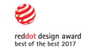

Red Dot: Best of the Best
Award’s country of origin: Germany
OMNI Nightclub together with Etai-Space Design Office was awarded the highly-sought after and prestigious Red Dot Award: Best of the Best, an award reserved for products that exhibit superior design excellence and innovation. Other laureates in 2017 included Apple, Bose & Puma. The accolade validates OMNI’s position as groundbreaking in design, innovation and concept, once again propelling theLOOP to lead Taiwan in experience design and putting theLOOP in a class together with companies like Apple and Ferrari, who have also picked up the award.